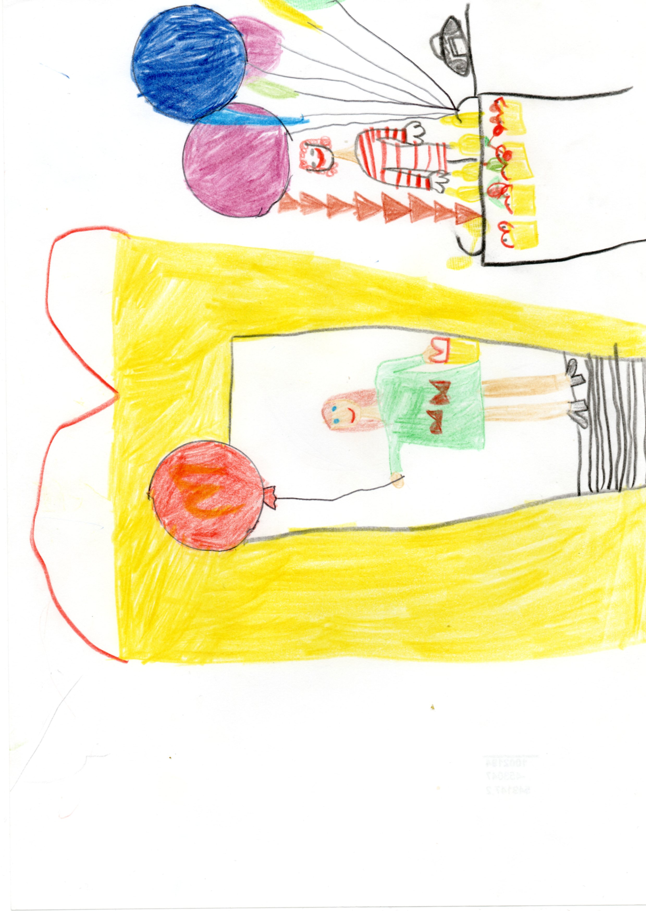
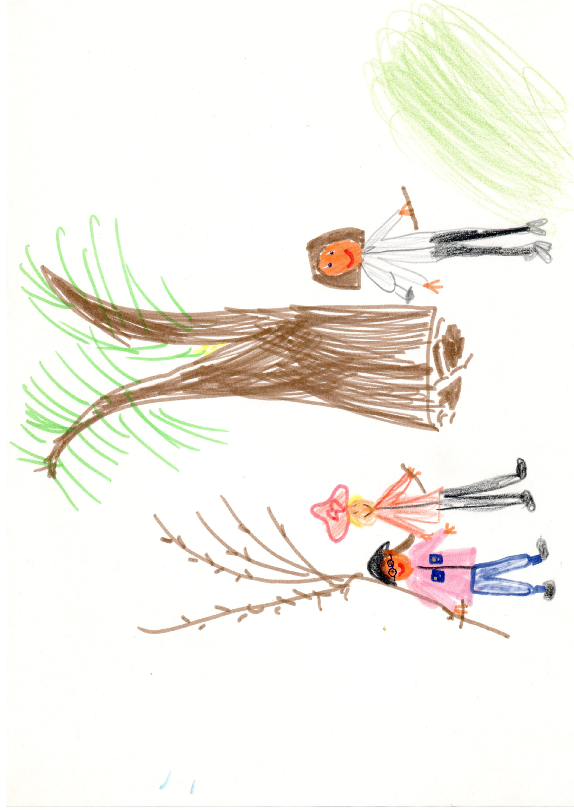
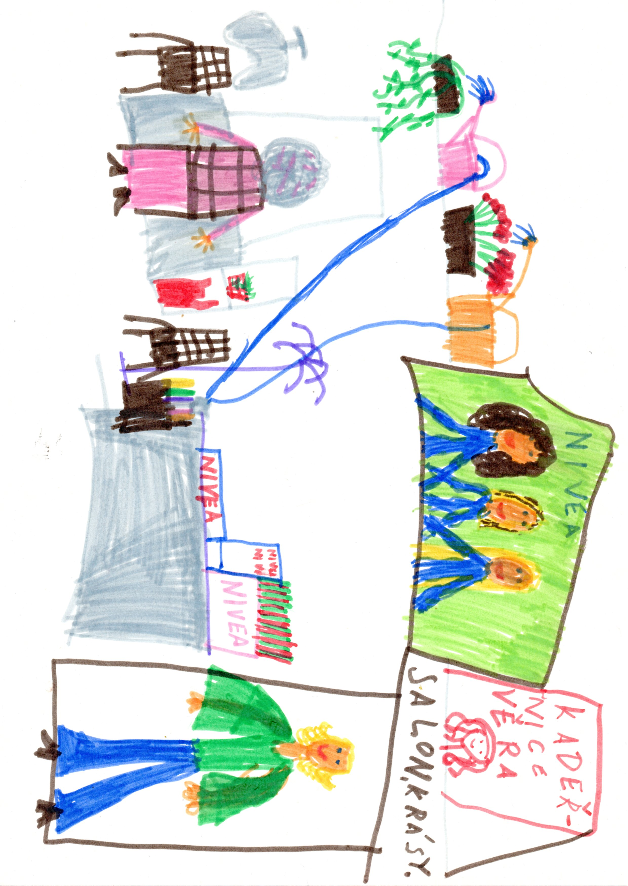
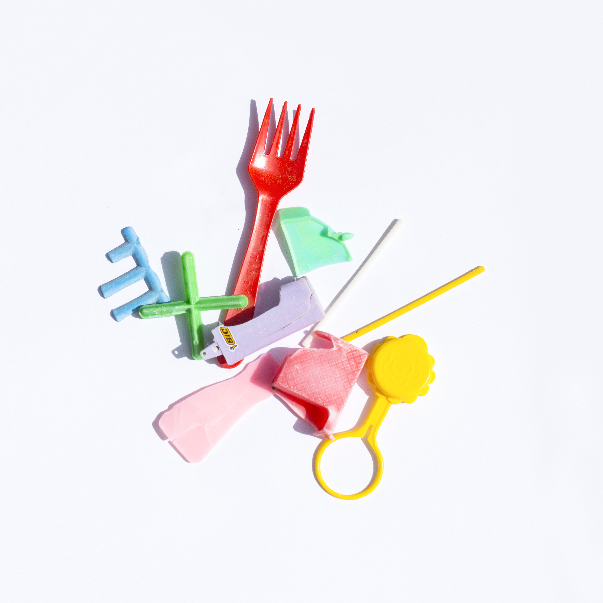
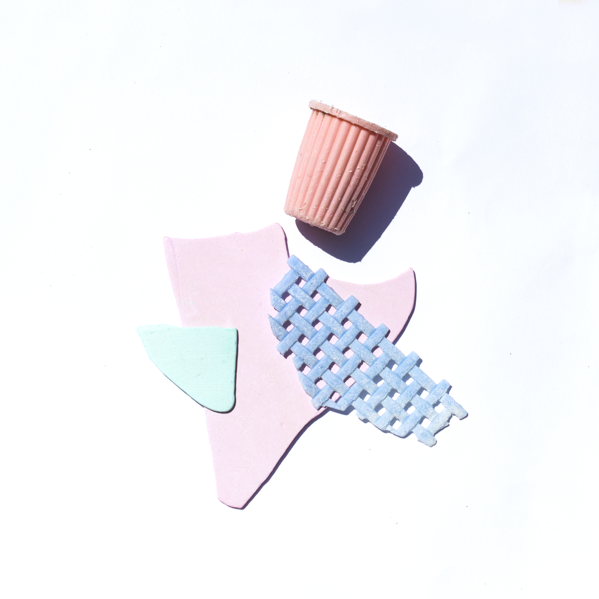
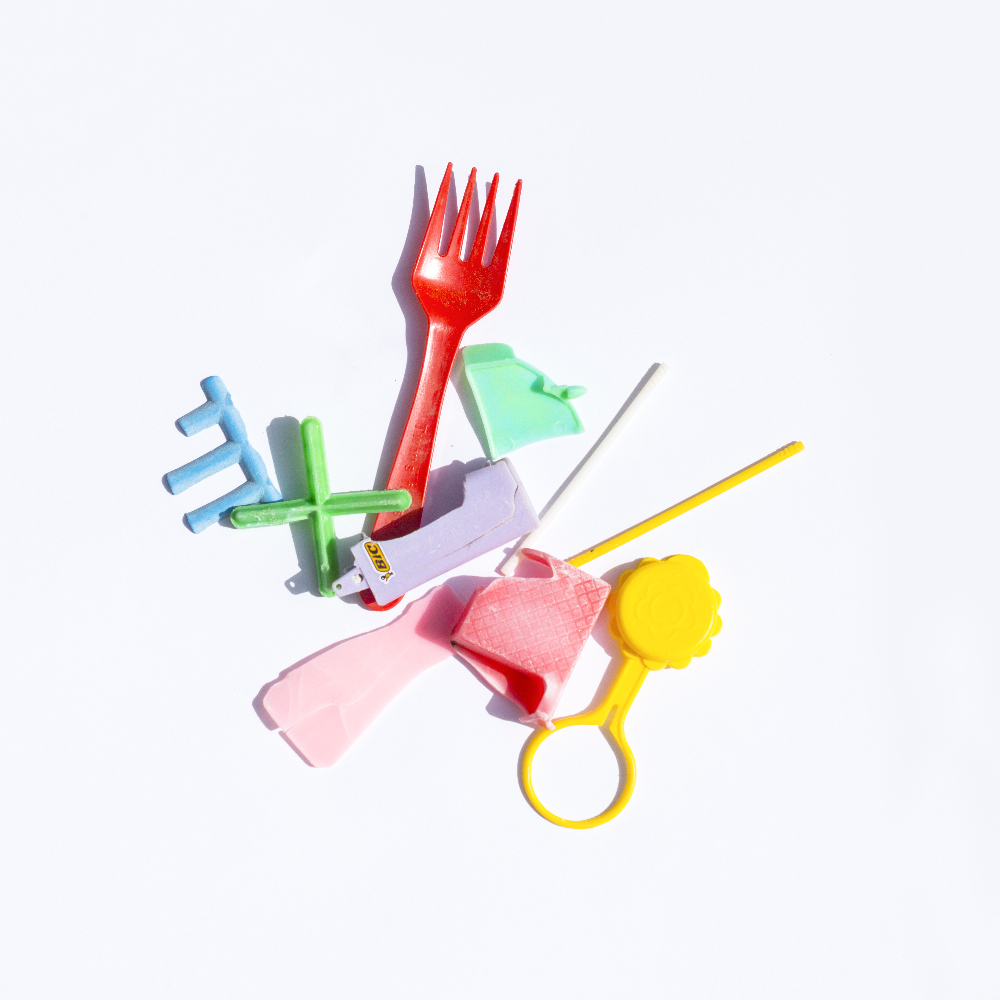
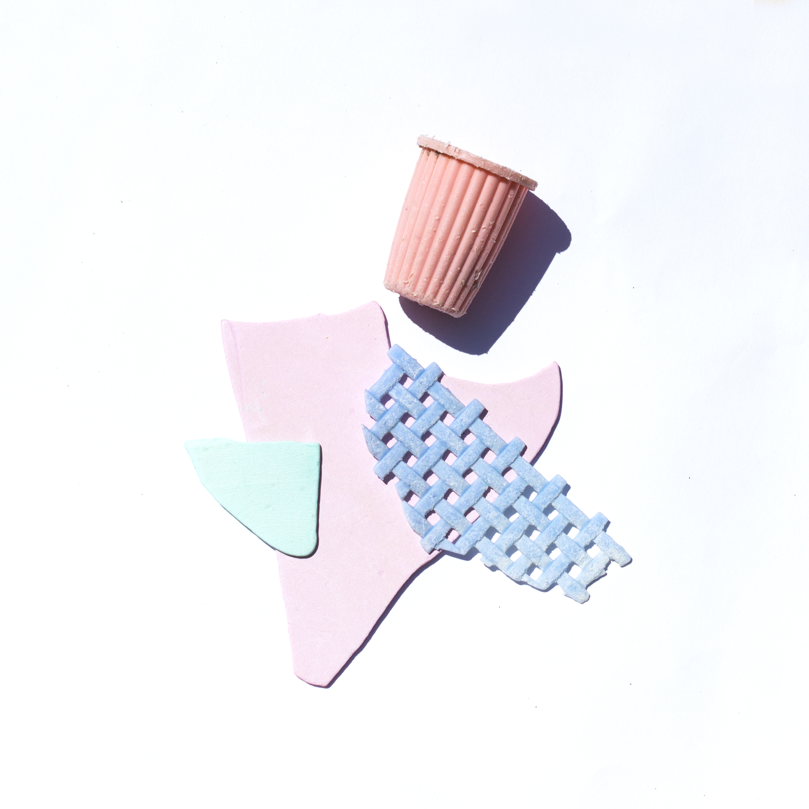

Základní informace
Mé jméno je Drahomíra Klofáčová. Někteří kamarádi mi říkají Dráha, Drahuška anebo Dája. Dájo mi také říkaji děti, které učím. Když se nesnažím být umělcem, jsem učitelkou výtvarné výchovy.
Vystudovala jsem Fakultu designu a umění Ladislava Sutnara v Plzni. Mým oborem byla Nová média. To je takový obor, kde si každý může dělat, co chce. Během studia jsem si vyzkoušela rozmanité výtvarné formy od animace až po odlévání sádrových forem.
Dětská výtvarná tvorba
K výtvarné tvorbě jsem měla blízko již od mala. Kreslila jsem akty (jo fakt), záznamy z televizních zpráv, kadeřnictví, jídla v McDonaldu, nebo deníkové záznamy z důležitých výletů a zážitků.
  
Ilustrace
Záliba v ilustrování mi zůstala až do dospělosti. Během stáže v Římě jsem vytvořila ilustrace ke knize Klub rváčů Chucka Palahniuka.


Out of context
V Itálii jsem kromě animovaných ilustrací vytvářela i koláže z odpadků, které jsem posbírala na pláži v Santa Marinelle.

 


